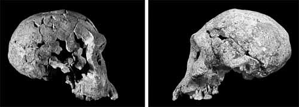

Слева череп KNM-ER 1813 (Homo habilis), справа - D2700 (Homo ergaster).
Период существования архантропов можно условно разделить на три неравных периода, соответствующие 1800-1200 тысяч лет назад, 1200-400 тысяч лет назад и 400-130 тысяч лет назад. Как можно легко заметить, временной промежуток существования архантропов сильно перекрывается с предыдущим – временем существования "ранних Homo", однако типичные архантропы достаточно сильно отличаются от "ранних Homo", будучи значительно более массивными и близкими к современному человеку, хотя в Африке существует почти непрерывный морфологический ряд от Homo habilis через Homo ergaster к Homo erectus.